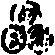

雪竇石奇禪師語錄卷第七
機緣上
僧問。沒奈何時如何。師云。山僧更沒奈何。云。爭奈目前何。師云。目前是甚麼。云。推不向前。約不退後。師云。何不禮拜。僧禮拜師便打。
僧問。東山水上行意旨如何。師云喫茶不暇答話。云。畢竟如何。師以拄杖拄云。東山水上行。你為甚不行。直拄出方丈。
僧問。演唱宗乘。須具殺活縱奪。敢問如何是殺。師舉右腳示之。如何是活。師舉左腳示之。如何是縱。師亦以右腳示之。如何是奪。師復以左腳示之。僧擬進語。師喝。僧云。殺活縱奪已觀拈出。孟春猶寒是何宗旨。師云。站過一邊。僧云。即此一語。殺耶活耶。縱耶奪耶。師云。截斷舌頭。
問。特來呈舊面時如何。師云。多少大。僧喝。師云。再喝看。僧無語。師云。弄虛頭漢。
問新歲已臨。舊歲何往。師默然。云。不涉新舊。更請宣揚。師云。禮拜了退。云。新舊已蒙師指示。中興古剎事如何。師云。來朝看取。
問某甲暫別和尚意旨如何。師云。快走。云。有人問雪竇佛法。如何秪對。師云。莫謗山僧。
問。如何是有佛處不得住。師便打。如何是無佛處急走過。師又打。有無都不著又如何。師即扯耳推出。
僧呈問頭數則。求師答。師驀頭棒云。一齊為汝答去。居士問古人道。學道之人不識真。只為從前認識神。又道。看到無心處。凡心即佛心。既是凡心即佛心。何異識神。弟子有疑。師打云會麼。士云。弟子知痛。師云。正是識神。士禮拜云。謝和尚指示。師云。見甚麼道理。士云。無見。師拈杖云見麼。士云見師云。自語相違漢又打。士云。弟子實體上苦道不出。師云。實在什麼處。士擬議。師連打。
問。一口氣不來。甚處安身立命。師云。鼻孔遼天。
問。古澗寒泉則不問。瞪目不見底時如何。師云。今日天雨。云。恁麼飲則是。不飲則是。師云。且看腳下。
問。生死不了。求師開示。師云。喚什麼作生死。云不曉得。師云。生死已了。
虛谷顧邑侯問。宗門事從何門得入。師云從無門入。士云。儒家必從讀書門入。畢竟作麼。師云。正如銅墻鐵壁。士云那裏是銅墻鐵壁。師云。時刻在前。
問。和尚棒喝嘗用麼。師云。從來不曾。士云。古人青州布衫話我道喚白喚黃喚青都得麼。師云。且識青底問。悟時即迷。迷時即悟作麼會。師打云。者裏會。云。會得後又如何。師云你作麼會。僧擬議師又打。
問覿面相逢事作麼生。師便打。僧云。恁麼則觸處迥然。縱橫獨露也。師云。兩重公案。
僧參云。入門休問榮枯事。觀著容顏便得知。師云且道山僧年多少。僧無語。師云。掠虛漢。
僧呈偈云。只要行人步不移。師云你是個死漢麼云某甲只今是坐是立。師云。死漢。云。一對。師云。你連累老僧那。便打。
火頭問。某甲特求開示。師比兩手示之。云。不會。師云。問取灶門去。
問。古人道離心意識參。既是離心意識。參個甚麼。師云。樹上烏鴉叫云。也是龜昔上拔毛。師云。甚麼道理。僧喝。師便打。
問。一念無思時如何。師云。死水裏。僧喝。師云。喝那個。云。明月無私。師打云。正在死水。
問。長安雖鬧。我國晏然。即今長安大鬧如何。師云。老僧在者裏受用麼。云。獨樂不若與眾。師云。未可道我國晏然。
問。風從何起。師云。問從何來。
問。如何是諸佛實相。師云。十個指頭五個長。僧云體用齊彰。師便打。
問。無地可立如何。師云。即今在什麼處。
師命一僧做尊證。云。不敢。待有人尊證。弟子纔好與人尊證。師云。你向來作麼。僧一喝。師云。莫道無人尊證。僧云。不識好惡。師云。果然。
問如何是安居樂業一句。師云。今日天寒。云。向上還有事也無。師云。來日向汝道。
問終日穿衣喫飯。為甚學人不會。師云。爭怪老僧。云。乞師說破。師云。穿衣喫飯。云。是誰聻師便打。
居士問。墻坍壁倒時如何。師云。好個消息。士云。放光動地。師云。光在甚處。士擬議。師便打。
居士問。世尊拈花。迦葉微笑。是甚麼意旨。師豎起拂子士喝。師云。者一喝與山僧拂子是同是別。士擬議。師便喝。
問。弟子薪水道人特來問和尚禪。師云。山僧頭痒無暇答話。禮拜云。謝和尚指教。師云。你見什麼道理。云。只在頭痒處。師便棒。
僧頌月落三更穿過市因緣呈師。師云。意旨如何。僧喝。師云。你喝月。喝三更。僧無語。師便打。
僧求開示。師云。你向在那裏住。云徽州。幾時到這邊。云。去年十月。師便打。
問。從來工夫一時放下。請師別垂方便。師便打。云。不會。師云。會取去。
問徹骨徹髓時如何。師云。待徹向你道。
問。如何是學人住處。師便打。云。除者一棒。還有麼。師云。除者一問。道看。僧喝。師又打。
居士問如何是北斗裏藏身。師云。面南看取。士擬議。師便打。次日士禮拜。師云。北斗面南看作麼生。士擬進語。師打一棒云。父母未生前。北斗面南看。分明在者裏。不用別鑽研。
僧求住。師云。沒有你安身處。僧近前。瞬目視師。師云。作麼。僧禮拜。師便打。
眾入方丈。請小參。值師立次。卻云。待坐了。為你們小參。眾禮拜。師云。說什麼小參。直是大參了。
僧參。師問。來做什麼。云。親近和尚佛法。師云。他沒有佛法。云。將什麼示人。師便打。云。豈不是佛法。師云。喚作佛法。入地獄如箭。
問。推倒須彌山。如何是向上一著師云。你頂門眼在麼。僧擬議。師便打。
晚參。垂問云。天寒人寒。明什麼邊事。一僧云。應時及節。一云。寒時寒殺。一云。和尚不唧溜。師一齊喝出。
師問僧。那裏來。云。天台。師云。石梁橋斷也。僧擬議。師云。你不從天台來。
二僧參。師問。甚處來。云。金粟。師云。錢塘江被王總督把斷。作麼得過。云。渡海來。師云。海風作又如何。僧無語。師云。一齊淹殺。
晚參。眾禮次。師云。玄沙道。因我得禮你。汝等作麼會。侍者打師一下云。者裏什麼所在。說你說我。便行。師便打。眾無語。次日。一僧入方丈云。昨晚和尚垂語。侍者何得無禮。大眾前便打和尚。師即打趁。
問僧。一日行益多少飯。云。大眾彀喫師云。你在大眾數否。云。某甲日日飽。師云。飯袋子。
師落堂云。結制五日了。今晚要還老僧飯錢。一僧云。飯錢且置。昨夜馬大師來也。師云。與你道甚麼。僧一喝。歸眾。師云響則響當不得飯錢。又僧云某甲不曾喫飯還什麼飯錢。師云。二時過堂作麼。僧擬議。師便打。一僧云。某甲庫藏裏一物也無。將什麼還飯錢。師云。如何是無一物底消息。僧擬議。師亦打。一僧出纔禮拜。師打云。者一拜也當不得。便歸方丈。僧隨後入云。適纔和尚一棒。意旨如何。師又打。僧云。費力不少。師連棒打出。
僧出山。師云。臨行一句作麼道。僧云。某甲著草鞋去也。師云。有人問雪竇如何秪待。你作麼對。云。清茶淡飯。師云。也須嘔卻。
師入堂云。維那要老僧落堂警策。顧左右云。還用為你們警策麼。拈棒一齊打退。
居士禮次。師云。日來消息何如。士擬開口。師一喝。士無語。師云。應是你喝。以杖拄出。
師搊一僧云。作麼生。云。某甲打米。師云。即今聻。云。不間隔。師云。昨日事作麼生。僧擬議。師便打。
僧參。師云。幾時起程。云。六月。師云。一路有人與汝說禪來。云。那裏見得。師云。者漢猶困在。
師落堂。一僧問。如何是學人自己師云。兩眼對兩眼。云。生死如何得了。師云。又是從頭起。云。父母未生前聻師云。你且了取一頭。一僧禮拜云。泥彈金彈則不問。如何是高超一句。師云。看取腳下。云。頭頭獨尊去也。師云。何不禮拜。僧佇立。師便打。
問僧。那裏來。云。龍池。師云。來做甚麼。僧頓足。師云。向甚處去也。僧無語。師便打。
晚參。師問。長安甚鬧。我國晏然。如何是晏然一句試道看。一僧禮拜而退。師云。儱侗。一僧云。某甲在者裏。師云。未得晏然。一僧云者僧不會和尚意。便行。師云果然不會。
行者五人求命一師過法華經。師云。惟有一門而復狹小。尋得門著。即與汝過經。無語。一齊打出。
一僧禮拜起。遶一圓相。師云。你病麼。云。不病。師云。為甚麼頭暈。擬議。師便打。
僧參。師問。那裏來。云。十八澗。師云。亂走作麼。云。不曾動一步。師云。爭得到者裏。僧遶一圓相。師云。大好不動步。云。和尚莫作此解。師云。你作麼生。僧又遶一圓相師云蝦跳不出斗。
一僧禮辭。師云。有問雪竇。如何秪待。向他道個甚麼。僧無語。師云。老僧罪過。僧云。殘羹餿飯。不勞拈出。師云。過去久矣。
問。不是心。不是佛。不是物。是個甚麼。師劈口打云。不是心不是佛不是物。
問。古鏡未磨時如何。師云。昨日閻總戎進山打仗去。你知麼。云。某甲不管閒事。師便打。
師人堂。眾禮拜。一僧云著賊也。師云。賊在甚處。僧喝。師打云。汝試說看。僧云。明日再商量。師復打。
僧問。無夢無想。如何是大用現前。師一喝。
問。一棒打破髑髏。如何安身立命。師打云。會麼。云。脫體無依去也。師云。未是你放身命處。僧以指打一圓相。師云。兔子不離窠。
僧參云。久慕和尚。今日親見。師云。那裏得者消息。云。某甲自松江來。師云。老僧有甚可親。云。不入虎穴。焉得虎子。師云。野狐精。
僧參送香儀。師云。更有也無。僧云。再加二十兩。師云。將來看。僧以坐具一拂。師云。我不要假銀子。僧無語。
晚參眾禮拜侍立。師云。請歸堂去。眾走。師喚轉來。眾無顧者。師云。者一隊漢。秪解恁麼去。不解恁麼來。
王念尼海憲於協府會齋次。問云。知有底人日用如何修行。師云。穿衣喫飯。士云。有時穿衣喫飯。沒有時又且如何。師云。居士不妨疑著。
一僧看溈山水牯牛公案。至芭蕉托此相呈之處。指問一僧。是甚麼道理。僧彈指云。者裏會得。一串穿卻僧云。未在。更道僧便掌。其僧不肯。白師。師云。他者一掌落在甚處。你卻不肯。僧擬議。師掌之。遂喚前僧徵云。芭蕉三圓相。你因甚打他一掌。僧作掀桌勢。師云。亂做。連打三棒。復云。芭蕉為甚作三個圓相。你二人道看。他道得你與他懺悔。你道得他與你懺悔。若俱道不得。各請歸堂。哭泣有分。一僧遶一圓相。一僧云。白雲覆青山。師一齊叱出。至晚參。師舉問一僧。適纔者公案你如何理會。僧云。目前無和尚。此間無學人。師云。知你在鬼窟裏作活計。僧禮拜。師云。似即似。是即未是。又問一僧。僧云。我王庫內無如是刀。師云。老僧未肯點頭在。
僧辭。師以拄杖劃云。道得從汝去。僧將坐具一摵便行。師云。前面有人。大須仔細。
問已悟底人為甚當機暗昧。師云。連日陰雨。爭得到來。進云。只如入林不動草。入水不動波。是甚麼人境界。師云。路滑難行。進云。會不得。師一喝。僧擬議。師便打。
居士問。昔日鹽官問侍者犀牛話者無對。古德代云。和尚年尊。別請人好。此意如何。師以拂子左右拂。
典座禮拜。師云。做多少饅頭。云。五六百。師云。說一是一。說二是二。何得與麼儱侗座無對。侍者云。和尚有一分。座云。侍者也有一分。師云。莫將官物當人情。拈出你自己底看。侍者打師一掌云。某甲卻有。師叱退。
僧參。師問。那裏來。云。雁宕。師云。詎那尊者在麼。云。在。師云。做甚麼。云。看水。師云。他年多少。云。天長地久。師云。恁麼你未見在。僧云。即今親見。師云。即今那裏見。僧無語。師便打。
收飯僧入。師云。你今日為甚來遲。云草鞋斷了。師云。還我磉來。僧喝。師云。我問你腳跟下事。亂喝作麼。僧禮拜。師便打。
一僧問侍者。露柱懷胎。燈籠生子。不知是男是女。請商量看。侍豎起拳云。且道者個是男是女。僧云。放下著更道。侍與一掌。僧云。分明道看。侍又掌云。將謂別有僧亦掌師偶出。侍舉似師。僧云和尚面前不好難為你師云你那裏去了。僧云。者老漢未會末後句在。師云。如何是你末後句。僧豎起拳。師云。不是。還我末後句來。僧無語。師打趁之。
居士問。兩條路不明。求和尚指示。師云。兩條什麼路。云。來去兩條路。師云。來去止有一條。為甚麼卻有兩條。云。不會。師便打。
僧呈偈。師云。看過了。你本分事作麼生。僧云。適纔喫粥來。師云。終日喫飯未曾咬著一粒米。你如何道僧擬議。師便打出。至晚。一僧代云。疑殺天下人。師云。你底事作麼生。僧云。更要第二杓惡水麼。師以手搊其鼻。僧禮拜云。求和尚印證師云。者死漢。
僧問。承師有言。秪要放下便休。請道放下個甚麼。師以棒擉云。放不下。擔取去。
僧參云。求和尚授記。師云。授記你明日死。云。某甲卻曉得生死無常。師云。恁麼則未便死在。
僧參。師云。雨淋淋地。因甚遠來。云。和尚風高。師云。那裏見得。云。樹大招風。師云。莫眼花。
玄音參云。向失親覲師云。說離又爭得音禮拜。師云。汝自來。有人同來。云。自來。師云。何不尋個伴侶。云。用伴作麼。師云。路險處如何過。云。種田人頗多。師云。也不放過你。玄無語。師云。且去。
師入堂。眾競出下喝。師云。喝則由汝喝。你道一喝不作一喝用。作什麼用。一僧云。鵓鳩樹上啼。意在麻園裏。一僧云。床窄先臥。粥稀後坐。一僧云。喚作喝。入地獄如箭射。一僧云。老漢著甚麼死急。先後下語凡三十餘轉。師云。可見你們一個個不知一喝底用處。大呵罵而出。隨示一頌曰。一喝堂堂作用全。不作喝用力加鞭。衲僧直下知端的鷂子新羅過那邊。
師拈古鏡未磨因緣問尼惟極。汝作麼會。極云。會即會。道不出。師云。果然會道不出。不會道不出。極云。教我道個甚麼。師便一掌。極云。甜瓜徹蔕甜。苦瓢連根苦。師云。你又恁麼去也。極禮拜。
僧參。師云。那裏來。云。長老山。師云。長老在家麼。云。在家。師云。在家作甚麼。云。經行及坐臥。師云。為甚者樣著忙僧擬議。師便打。僧喝。師又打。
海憲王念尼居士入山。問。昔日布袋和尚見人便道。看看。今時何故不學他。師云。且道德山棒。臨濟喝。雪峰輥毬。祕魔擎叉。與他存兩樣。無兩樣。士云。實處即是一般。師云。貧道即今棒居士。還領得麼。士展兩手云。不離者裏。師云。不是。再道看。士擬進語。師笑。士起身云。小解去。師云。擬要脫身那。士云。喚作脫身即錯。師以杖擊云。正好喫棒。 問。佛與仙是同是別。師拈棒。士抵云。我是正問。師云。那裏是邪。 問。今時還有逆行底菩薩麼。師云。有。士云。作麼生逆行。師云。早間放告。晚上比詞。 問僊家性命。雙修工夫也妙。師云。禪家只論見性。不論工夫。士云。見性總不離性命雙修。師云。喚什麼作性。士無語。師一喝。
僧參。師問。那裏來。云。徑山。師云。你因甚捨一取一。云。也要處處到。師云。者裏是什麼境界。僧擬議。師喝出。法幢上座早參。從左門入。師云。何不從中門入。幢云。若有個中。卻成偏去。師云。只如老僧不在。禮拜即是。不禮拜即是。幢擬進語。師一喝。幢震驚。師拈棒便打幢拜起。師遽揖出。
晚參。眾纔集。師云。吾有一問。道不得底拂袖便去。道得受汝禮拜。眾立定。師撫掌云。失利。失利。一僧便出。師云。教汝去便去。若教死。便死即得。一僧作禮。出云。念和尚年老。師云。你既答不得。亦不受你禮。
師入堂坐次。打幢藏主一棒云。作麼生會。幢云。剜肉作瘡。師云。只道得一半。幢云。者一半也不消得。師又打一棒云。且道是賞你罰你。幢云。總不與麼。師連打兩棒。便起身。
幢一日呈小影。請師題。師云。如何是你大影。幢拂袖出。師云。只許你一半。幢云。不受和尚謾。
師一日問幢。古人道。知是般事便休。上座喚什麼作者事。幢云。盡力道不出。師搖頭大笑。幢云。說似一物即不中。師叱云。更說道理那。
僧參云。自遠趍風。請師一接。師示。你者雙草鞋從那裏來。僧擬進語。師劈口打。
師問一僧。從那裏來。云。杭州。師云。錢塘江為你說甚麼。無語。
普請挑土次。師問侍者。你挑幾轉。者放下土擔。乂手立。師拈棒。者挑起便行。師云。到疑著他。歸方丈。復問。適來公案未完。你還知麼。者云。劍去久矣。師云。腳跟下事作麼生。者云。今日熱如昨日。師云。文殊是七佛之師。為甚出女子定不得。者云。惟人自肯乃方親。師云。罔明是初地菩薩。為甚卻出得。者云。到江吳地盡隔岸越山多。師云。未夢見在。者云。和尚疑則別參。師打一掌云。且道是賞你罰你。者云。是什麼所在。說賞說罰。師復掌。者禮拜。師與一踏。
僧問。若不言前親薦取。終身空自枉勞心。如何是言前底旨。師搊僧鼻云。會麼。無語。師便掌。
居士問。鳳鳴天下瑞時如何。師云。道什麼。士復舉。師一喝。士亦喝。師云。你一喝。我一喝。是同是別。士又喝。師云。一喝分賓主。你者兩喝那是賓。那是主。士云。者裏說什麼賓主。師便打。士云。盲加瞎棒。師直打出方丈。
雪竇石奇禪師語錄卷七(終)